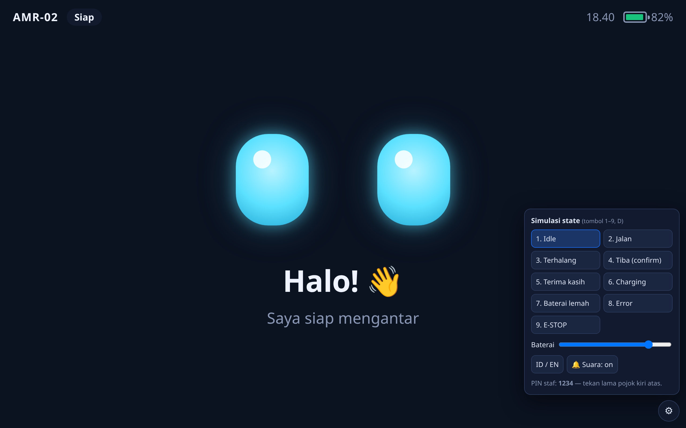

Web UI untuk mengelola robot, peta, station, zone dan mission — beserta cara kerja Robot Agent, operasi banyak robot, dan layar Kiosk di robot.
Web UIRobot AgentMulti-robotKioskROS 2 Jazzy · Nav2
Versi dokumen: Oktober 2026
Sistem: new_webui (frontend Vue + backend FastAPI) · amr_agent · kiosk-mockup
Bahasa label di layar: Inggris (ditulis persis seperti tampil di layar)
AMR Control adalah satu tempat untuk mengatur robot AMR (Autonomous Mobile Robot): dari mendaftarkan robot, membuat peta, menandai titik tujuan, sampai menjalankan rute dan memantau hasilnya.
1.1Komponen utama
Di browser
Web UI
Aplikasi yang Anda buka di browser. Semua pekerjaan operator dilakukan di sini: melihat peta live, mengirim robot, membuat mission, menggambar zone.
Di server
Backend (registry)
Menyimpan semua data di database: daftar robot, peta (beserta versinya), station, zone, mission, dan riwayat run. Ini adalah sumber kebenaran.
Di setiap robot
Robot Agent
Program kecil di komputer robot (mis. Jetson). Ia mengambil tugas dari backend, menyalakan Nav2/SLAM, menjalankan mission, dan melaporkan progresnya.
Di layar robot
Kiosk
Tampilan untuk orang di sekitar robot: wajah robot, tujuan, dan tombol besar "Sudah diambil" saat pesanan tiba. Saat ini berupa mockup.
1.2Cara data mengalir
Hal terpenting untuk dipahami: browser tidak memerintah robot untuk menjalankan mission. Browser hanya menyimpan "apa yang harus dikerjakan" ke backend; robot sendiri yang mengambilnya dan mengerjakannya. Karena itu menutup tab browser tidak menghentikan robot.
Browser → Backend: semua data yang Anda buat (peta, station, zone, mission) disimpan ke backend.
Robot → Backend: robot memeriksa backend setiap ±10 detik: "peta apa yang harus saya pakai? mode apa? ada mission?" lalu melaporkan progres.
Browser ↔ Robot (langsung): hanya untuk hal yang live: menampilkan peta, laser dan posisi robot, serta mengirim Set pose / Go here.
1.3Istilah penting
Istilah
Arti singkat
Peta (Map)
Gambar denah tempat robot bekerja. Setiap peta punya versi (v1, v2…); versi lama tidak pernah ditimpa kecuali Anda memilih "Replace".
Station
Titik bernama di peta (mis. "Meja 5", "Dock 1") lengkap dengan arah hadap robot saat tiba.
Zone
Area poligon di peta yang mengubah perilaku robot: dilarang masuk, dihindari, dibatasi kecepatannya, atau pemicu sinyal.
Mission
Rute berurutan: daftar station yang dikunjungi satu per satu (step).
Run
Satu kali eksekusi sebuah mission oleh satu robot (sekali jalan, beberapa lap, atau terus-menerus).
Pose
Posisi (x, y dalam meter) plus arah hadap robot di peta.
Nav2 / SLAM
Nav2 = sistem navigasi otomatis robot. SLAM = mode membuat peta sambil berjalan.
2Memulai
Membuka Web UI, mengenal tata letak layar, dan membaca status koneksi robot.
2.1Membuka Web UI
Buka alamat Web UI di browser (Chrome/Edge/Firefox terbaru). Saat pengembangan alamatnya http://<ip-server>:3100; pada instalasi produksi biasanya cukup http://<nama-server>. Halaman pertama yang muncul adalah Dashboard.
2.2Tata letak layar
Gambar 1. Tata letak umum: menu di kiri, judul halaman di atas, ikon lonceng notifikasi di kanan atas, pemilih tema di kiri bawah. (Contoh ini diambil saat kedua robot belum tersambung.)
Menu kiri:Dashboard, Robot, Maps, Mission, Station, Zone, lalu di bawah garis pemisah Alarm (dengan angka merah bila ada alarm yang belum dibaca).
Ciutkan menu: klik tombol bulat bertanda panah di tepi kanan menu. Saat diciutkan hanya ikon yang tampil.
Tema: di kiri bawah ada tiga pilihan — Terang (matahari), Gelap (bulan), Sistem (ikuti pengaturan komputer).
Lonceng 🔔 (kanan atas): menampilkan 3 notifikasi terbaru yang belum dibaca. Lihat Bab 4.12.
2.3Status koneksi robot
Di banyak tempat Anda akan melihat indikator koneksi robot. Artinya:
Tampilan
Arti
Yang perlu dilakukan
Online
Terhubung ke robot dan data terus mengalir.
Normal. Hanya dalam status ini robot bisa diberi perintah.
Stale
Koneksi terbuka, tetapi salah satu data rutin berhenti datang.
Cek apakah program di robot macet/hang, atau jaringan lambat.
Connecting
Sedang membuka koneksi (atau "Reconnecting (n)" saat mencoba ulang).
Tunggu. Percobaan ulang otomatis, jeda 1 s naik sampai 30 s.
Offline
Robot tidak dapat dijangkau.
Pastikan robot menyala dan rosbridge (port 9090) jalan.
Muted
Pemantauan robot ini sengaja dimatikan.
Klik Monitoring/Resume monitoring untuk menyalakan lagi.
CatatanStatus "Muted" hanya disimpan sementara: setelah halaman di-refresh, pemantauan aktif kembali.
3Alur Kerja dari Nol sampai Robot Jalan
Urutan pekerjaan untuk lokasi baru. Ikuti dari atas ke bawah; detail setiap layar ada di Bab 4.
Daftarkan robot. Buka Robot → + Add robot, isi nama dan alamat rosbridge (mis. ws://192.168.2.133:9090). Di robot, jalankan Robot Agent dengan ID robot yang muncul di Web UI (Bab 5.7).
Buat peta. Buka Maps → Create map, pilih robot, lalu kemudikan robot dengan joystick sampai seluruh area terpetakan, dan klik Save map. Jika sudah punya file peta (.yaml + .pgm), gunakan Upload map.
Tugaskan peta ke robot. Di Maps, klik Assign pada peta, centang robot, lalu Apply. Robot akan memuat peta itu dalam ±10 detik.
Pastikan robot dalam mode kerja. Di Dashboard, jika kolom Actions menampilkan Release, klik agar robot mulai bernavigasi (Nav2 menyala sendiri).
Beri tahu posisi awal robot. Buka halaman navigasi robot → alat Set pose → tekan di posisi robot dan seret ke arah hadapnya. Tunggu sampai status Localization menjadi "Pose available".
Tandai station. Buka Station → + Add station → klik di peta (seret untuk arah hadap). Atau kemudikan robot ke titik itu lalu Capture.
(Opsional) Gambar zone. Buka Zone, pilih jenis (Keep out, Avoid, Speed limit, Trigger) lalu klik sudut-sudut area.
Buat mission. Buka Mission → + New mission → beri nama → klik station di peta sesuai urutan → Save.
Jalankan dan pantau. Klik Run (atau dari halaman navigasi: pilih mission → Start mission). Notifikasi muncul setiap robot tiba di station dan ketika mission selesai.
TipsRobot yang sudah punya peta dan mode "Working" akan menyalakan navigasinya sendiri saat dihidupkan — tidak ada tombol "start" yang perlu ditekan setiap pagi.
4Panduan Setiap Halaman
Penjelasan isi dan tombol setiap halaman. Nama tombol ditulis persis seperti di layar.
4.1Dashboard — kondisi armada sekilas
Tujuan halaman ini: menjawab "robot mana yang butuh perhatian saya sekarang?". Halaman diperbarui otomatis setiap 2 detik dan membukanya tidak mengirim perintah apa pun ke robot.
Bagian "Needs attention"
Muncul hanya jika ada masalah. Setiap baris punya tombol Open navigation.
Pesan
Tingkat
Artinya
No link to this robot
fault
Robot tidak bisa dihubungi. Periksa daya dan rosbridge.
Telemetry has gone quiet
warn
Terhubung, tapi data berhenti — program di robot mungkin macet.
No map assigned
warn
Robot belum punya peta, jadi belum bisa bernavigasi/menjalankan mission.
This robot cannot reach the registry
warn
Agent di robot tidak bisa menghubungi backend. Peta, station, zone baru tidak sampai.
Navigation failed to start
fault
Nav2 gagal menyala. Lihat log robot.
Should be navigating, but is not
warn
Robot diminta bekerja tapi Nav2 belum menyala.
<mission> failed
fault
Run mission terakhir gagal (detail tercantum).
Monitoring is muted
info
Pemantauan robot dimatikan.
Tiga angka ringkas
Robots (total & yang online), Working (yang sedang menjalankan mission & yang diparkir), Needs attention (jumlah robot bermasalah).
Tabel "Fleet"
Kolom
Isi
Robot
Nama dan warna penanda robot.
Link
Status koneksi (Bab 2.3).
Mode
Lencana = mode yang diminta (Working, Parked, Surveying); teks kecil = mode sebenarnya (navigating, idle, starting…). Teks menjadi kuning bila keduanya tidak cocok.
Nav2 / SLAM
RunningStartingStoppingFailedStoppedUnknown (arahkan kursor untuk detail).
Map
Nama dan versi peta yang dipakai; "—" kuning bila belum ada.
Doing
Mission yang sedang dijalankan beserta step/lap, atau "idle".
Actions
Park / Release dan Navigation.
Park dan Release
Park = robot berhenti bernavigasi dan tetap berhenti (Nav2 dimatikan). Release = robot boleh bekerja lagi; Nav2 akan menyala sendiri dalam ±10 detik bila robot sudah punya peta. Tombol ini hanya mengubah "keinginan" di backend — agent di robot yang menyesuaikan.
4.2Robot — daftar robot
Gambar 2. Daftar robot terdaftar dengan alamat rosbridge, ROS domain, aktivitas dan status koneksi.
+ Add robot — mendaftarkan robot baru.
Details — membuka halaman teknis robot (Bab 4.4).
Menu ⋯ — Stop monitoring / Resume monitoring, Edit, Remove.
Ikon panah melingkar — memuat ulang daftar.
Gambar 3. Dialog Add robot.
Kolom isian
Keterangan
Robot name *
Nama yang tampil di mana-mana. Samakan dengan tulisan di badan robot. Tidak boleh sama dengan robot lain.
Bridge WebSocket *
Alamat rosbridge robot, wajib diawali ws:// atau wss:// dan memakai port, mis. ws://192.168.2.133:9090.
ROS domain ID
Opsional (0–232). Hanya perlu jika ada program di mesin ini yang memakai DDS langsung; browser tidak membutuhkannya.
PentingRemove hanya menghapus robot dari daftar. Peta, station dan mission di backend tidak ikut terhapus.
4.3Robot Navigation — halaman kerja satu robot
Halaman paling sering dipakai operator: peta live, posisi robot, mengirim goal, menjalankan mission, dan menghentikan robot. Buka dari Navigation di Dashboard.
Gambar 4. Halaman navigasi: kartu judul, lima status, kartu Mission, alat & layer peta, peta live, dan data baterai. Zone keep-out tampak sebagai kotak merah muda. (Contoh saat koneksi berstatus "Stale".)
Kartu judul
Stop (merah) — menghentikan semuanya sekaligus: membatalkan goal, membatalkan mission yang berjalan, lalu memarkir robot. Robot tetap diam sampai Anda klik Release di Dashboard.
Monitoring / Muted — menyalakan/mematikan pembacaan data robot ini.
Details — halaman teknis. Back — kembali ke Dashboard.
Tombol Stop bukan E-STOP fisikTombol ini menghentikan perintah perangkat lunak, bukan memutus daya motor. Untuk keadaan darurat sesungguhnya, gunakan tombol E-STOP fisik di robot. Di halaman ini tombol Stop, Cancel mission, Cancel goal dan Stop after lap langsung bekerja tanpa konfirmasi.
Lima status
Status
Kemungkinan isi
Mode
NAV (navigasi), MAP (membuat peta), UNKNOWN.
Stack
RUNNING, STARTING, STOPPING, FAILED, WAITING.
Localization
"Pose available" (robot tahu posisinya) / "Waiting for pose".
Goal
"No goal", "Driving to the goal", "Arrived", "Goal canceled", "Could not reach it". Bila robot punya goal tapi diam ≥15 detik muncul Not moving for Ns.
Active map
ID peta yang sedang dipakai, atau "Not assigned".
Kartu Mission
Saat tidak ada mission berjalan: pilih Mission, pilih Run mode (Once = sekali, Laps = sejumlah putaran, Until stopped = terus-menerus), lalu Start mission. Bila tombol belum aktif, baris di bawahnya menjelaskan alasannya, misalnya "Set the initial pose before running a mission."
Saat mission berjalan, kartu menampilkan "Step 2 of 3 → Poin2 · single pass" dan tiga tombol:
Tombol
Efek
Stop after lap
Robot menyelesaikan lap yang sedang berjalan, lalu berhenti. Aman untuk robot yang membawa barang.
Cancel mission
Mission dihentikan saat itu juga; robot berhenti di tempat.
Cancel goal
Hanya membatalkan perjalanan saat ini; mission tidak dibatalkan.
Alat peta
Alat
Cara pakai
Pan
Menggeser tampilan. Roda mouse untuk zoom; tombol +− dan ⛶ (pas layar) di kanan atas peta.
Set pose
Memberi tahu robot di mana ia berada. Tekan di posisi robot, seret ke arah hadapnya, lepas. Klik tanpa menyeret = arah hadap tidak berubah.
Go here
Mengirim robot ke satu titik. Tekan di tujuan, seret ke arah hadap saat tiba, lepas.
Setelah pose/goal terkirim, alat otomatis kembali ke Pan. Panah sementara berwarna oranye (pose) atau hijau (goal).
Layer peta
Layer
Menampilkan
Awal
Costmap
Bagaimana perencana jalur "menilai" lantai: merah/ungu = mahal atau terlarang (termasuk zone keep-out).
mati
Laser
Titik merah: apa yang dilihat sensor robot saat ini.
nyala
Particles
Sebaran perkiraan posisi (apakah robot yakin di mana ia berada).
mati
Plan
Garis hijau putus-putus: rute yang akan ditempuh.
nyala
Mission
Lingkaran bernomor di setiap station mission: hijau sudah, biru + lingkaran tujuan sekarang, putih = belum. Garis abu-abu tipis menunjukkan urutan.
nyala
Zones
Area zone: merah = Keep out, oranye = Avoid, biru = Speed limit, ungu = Trigger.
nyala
Gambar 5. Layer Costmap menyala: dinding dan sekitarnya berwarna; kotak zone keep-out di lorong kanan ikut dianggap terlarang.
Robot di petaKotak biru = robot dengan ukuran sebenarnya, garis = arah hadapnya. Di kiri bawah peta tertulis posisi robot (x, y dalam meter), atau "no pose — is AMCL localised?" jika robot belum tahu posisinya (lakukan Set pose).
Gambar 6. Robot yang belum tersambung: status "Connecting", peta "Waiting for /map", dan alasan mission tidak bisa dijalankan.
4.4Robot Details — kesehatan data robot
Halaman teknis untuk mendiagnosis: data apa saja yang diterima dari robot dan seberapa sering. Tidak ada tombol yang menggerakkan robot di sini.
Gambar 7. Tabel Topics: setiap jenis data dengan pola kirim, jumlah pesan, frekuensi, terakhir diterima, dan status.
Status
Arti
OK
Data diterima, atau diam dengan wajar sesuai jenisnya.
Waiting
Sudah berlangganan tapi belum ada data (mis. robot belum mengirim baterai).
Stale
Data rutin berhenti melebihi batas waktunya — kemungkinan program pengirimnya macet.
Not subscribed
Tidak sedang dibaca (mis. robot di-mute).
Kolom Cadence: periodic = dikirim berkala (diam terlalu lama = masalah), event = dikirim saat ada perubahan (diam itu normal), latched = dikirim sekali saat mulai berlangganan. Tag "FULL" = hanya dibaca saat halaman robot terbuka.
4.5Maps — daftar peta dan penugasannya
Gambar 8. Daftar peta: ukuran, robot yang memakai, dan robot yang membuatnya.
Tombol
Fungsi
Create map
Membuat peta baru dengan mengemudikan robot (Bab 4.7). Hanya robot yang online yang bisa dipilih.
Upload map
Mengunggah peta yang sudah ada: file .yamldan gambarnya (.pgm/.png) wajib keduanya. Nama yang sudah ada = versi baru.
Assign
Memilih robot mana yang memakai versi peta ini. Robot memuatnya saat berikutnya dalam mode navigasi. Menghapus centang robot yang sedang memakai peta ini = melepas petanya.
⋯ Rename
Mengganti nama (berlaku untuk semua versi).
⋯ Edit cells
Membuka Map Editor.
⋯ Download
Mengunduh arsip peta.
⋯ Remove
Menghapus versi peta. Ditolak jika masih dipakai robot — pindahkan robotnya dulu.
Penting saat memindah petaStation dan zone milik satu peta. Memindahkan robot ke peta lain berarti station/zone peta lama tidak berlaku lagi untuk robot itu.
4.6Map Editor — merapikan peta
Untuk membetulkan peta secara manual: menghapus dinding "hantu" dari kaca, menutup pintu yang tidak boleh dilewati, dan sebagainya.
Gambar 9. Map Editor: alat di kiri, pilihan cat dan ukuran kuas di atas.
Klik Save, isi What changed (wajib — menjadi riwayat versi), lalu pilih:
Publish a new version (disarankan): versi lama tetap utuh; versi baru belum dipakai robot mana pun sampai Anda Assign. Bisa dikembalikan.
Replace vN: menimpa versi yang sama; robot yang memakainya memuat isi baru dalam ±10 detik. Tidak bisa dikembalikan.
4.7Survey — membuat peta dengan mengemudikan robot
Gambar 10. Halaman Survey sebelum mapping dimulai. Lencana di kanan atas menunjukkan status SLAM (di sini "Navigating" = robot sedang dalam mode navigasi).
Mulai. Klik Start mapping dan konfirmasi. Robot keluar dari mode navigasi, mission yang berjalan dibatalkan, dan SLAM menyala.
Kemudikan robot. Seret joystick di layar (lepas = robot berhenti), atau colok gamepad dan tahan tombol bahu (L1) sambil menggerakkan stik kiri. Pilih kecepatan: Slow 0,15 m/s · Normal 0,3 m/s · Fast 0,5 m/s.
Simpan. Setelah semua area terpetakan, klik Save map dan beri nama. Peta disimpan dulu ke disk robot, lalu dikirim ke daftar peta. Setelah berhasil, SLAM dimatikan dan robot kembali ke mode kerja.
E-STOP di halaman ini langsung mengirim kecepatan nol dan mematikan SLAM.
Stop mapping mematikan SLAM tanpa menyimpan — bagian yang belum disimpan hilang.
Menutup tab tidak menghentikan mapping; buka lagi halaman ini untuk melanjutkan.
CatatanKolom Note pada dialog Save map saat ini belum ikut tersimpan — hanya nama peta yang dikirim. Tambahkan catatan lewat Rename/versi berikutnya bila perlu.
4.8Mission — daftar rute dan yang sedang berjalan
Gambar 11. Daftar mission untuk satu peta. Kolom Mission menampilkan pratinjau rute (titik berwarna = jenis station).
Pilih peta di kanan atas; mission selalu milik satu peta.
Status:Running, Stopping, Idle. Last run: completed / failed / canceled dan kapan.
Run — memilih robot (hanya robot yang memakai peta ini) dan cara jalan: Once, Laps (jumlah putaran), Until stopped.
Edit — Mission Editor. ⋯ Remove — hapus rute (riwayat run tetap disimpan).
Kartu Running now muncul saat ada mission berjalan, dengan Stop after lap dan Cancel (keduanya meminta konfirmasi di halaman ini).
Gambar 12. Dialog New mission: cukup nama, langkah ditambahkan di editor. (Pesan merah muncul bila nama dikosongkan.)
Robot yang mengerjakanSetelah mission dijalankan, robot yang melaksanakannya — bukan browser. Menutup halaman tidak menghentikan mission.
4.9Mission Editor — menyusun langkah
Gambar 13. Mission "Tets" dengan tiga langkah. Klik station di peta untuk menambah langkah; rute tergambar bernomor.
Setiap langkah punya tiga pilihan:
Pilihan
Isi
Station
Titik yang dituju.
What to do
Pass through (hanya lewat/tiba), Pick (ambil barang), Drop (taruh barang). Default mengikuti jenis station.
After arriving
Continue (langsung lanjut) atau Wait for confirm (tunggu seseorang menekan tombol konfirmasi — lihat Kiosk, Bab 7).
Save aktif bila ada perubahan dan semua langkah punya station yang valid.
PerhatianPada robot simulasi saat ini (agent mode mission_via=nav), pilihan Pick/Drop akan ditolak robot, dan Wait for confirm belum benar-benar menunggu. Fitur ini membutuhkan integrasi Kiosk (Bab 7.5).
4.10Station — titik bernama di peta
Gambar 14. Station di peta (titik berwarna dengan garis arah hadap) dan daftarnya di kanan.
Jenis
Warna
Kegunaan
Pick
biru
Tempat mengambil barang.
Drop
ungu
Tempat menaruh barang.
Pick & drop
hijau
Keduanya di titik yang sama.
Charging
oranye
Dock pengisian baterai.
Dua cara membuat station
Klik di peta:+ Add station → klik lokasi (seret untuk arah hadap) → isi nama, jenis, catatan → Add station.
Ajarkan dari robot (paling akurat): kemudikan robot ke titik itu, pilih robot di Teach from…, klik Capture. Pilihan ini hanya muncul untuk robot online yang memakai versi peta yang sama.
Seret penanda untuk memindah posisinya (tersimpan otomatis). Arah hadap hanya diubah lewat ⋯ Edit.
Menghapus station membuat langkah mission yang memakainya tidak bisa dijalankan.
4.11Zone — aturan area
Gambar 15. Zone "Keepout1" (merah) menutup satu lorong. Tombol jenis zone ada di bar atas.
Jenis
Perilaku robot
Contoh pemakaian
Keep out
Dilarang masuk, dianggap seperti dinding. Goal di dalamnya ditolak; jika tidak ada jalan lain, rute gagal.
Panel listrik, tangga, area mesin, dapur.
Avoid
Dihindari bila mungkin. Nilai Reluctance 1–99: makin tinggi makin enggan. Tetap dilewati bila jalan memutar terlalu jauh atau tidak ada jalan lain.
Area ramai pengunjung, lantai basah.
Speed limit
Robot melambat sampai batas kecepatan (m/s) selama di dalam area.
Tikungan buta, pintu, area anak-anak.
Trigger
Menyalakan sinyal selama robot di dalam area (mis. lampu, buzzer).
Pintu otomatis, lampu peringatan.
Menggambar zone
Pilih peta, lalu klik tombol jenis zone di bar atas.
Klik setiap sudut area (minimal 3). Backspace menghapus sudut terakhir.
Selesaikan dengan mengklik sudut pertama, klik dua kali, atau tekan Enter.
Isi nama, (batas kecepatan / reluctance bila perlu), centang Active — robots obey it, lalu Add zone.
Robot menerima perubahan zone dalam ±10 detik.
Untuk menonaktifkan sementara, gunakan ⋯ Switch off (bentuknya tetap tersimpan) — lebih baik daripada menghapus.
Untuk mengubah bentuk: pilih zone lalu seret sudut-sudutnya (tersimpan otomatis).
Agar zone benar-benar berpengaruhDi robot harus berjalan zone_mask_server dan filter Nav2 (keepout/speed) aktif. Pada robot simulasi gprp keduanya sudah disiapkan dan dijalankan otomatis oleh Robot Agent.
4.12Alarm & notifikasi
Saat mission berjalan, Web UI menampilkan notifikasi pop-up (pojok kanan atas, hilang sendiri) dan menyimpan catatan yang bisa dilihat lewat lonceng 🔔 dan halaman Alarm. Ini bekerja di halaman mana pun.
Kuning (tidak muncul jika Anda sendiri yang membatalkan)
warning
Gambar 16. Lonceng: 3 catatan terbaru, Acknowledge all, dan View all alarms.Gambar 17. Halaman Alarm: daftar Active dan Acknowledged.
Acknowledge menandai sudah dibaca: hilang dari hitungan lonceng, tetapi tetap ada di riwayat.
Catatan disimpan di browser masing-masing (maksimal 200 terakhir), bukan dibagikan antar operator. Riwayat resmi run tetap ada di halaman Mission.
Saat ini hanya kejadian mission yang menghasilkan alarm; robot offline ditampilkan di Dashboard, bukan sebagai alarm.
5Robot Agent
Program yang berjalan di komputer setiap robot. Ia adalah "penghubung" antara apa yang Anda atur di Web UI dan apa yang benar-benar dikerjakan robot.
5.1Tugas agent
Mengatur mode robot
Menyalakan/mematikan Nav2 (navigasi) atau SLAM (membuat peta) sesuai keinginan di backend: Working, Parked, Surveying.
Mengurus peta
Mengunduh peta yang ditugaskan, mengecek keutuhannya (hash), menyimpannya di cache robot, dan memuatnya ke Nav2.
Station & zone
Mengambil station dan zone peta aktif, menyimpannya di disk robot, dan meneruskan zone ke Nav2.
Menjalankan mission
Mengambil run, mengirim robot ke setiap station, melaporkan step, tiba, selesai, gagal, atau dibatalkan.
5.2Siklus sinkronisasi (setiap ±10 detik)
Karena robot yang menarik data (bukan server yang mendorong), robot tetap bekerja walau berada di belakang NAT atau berpindah-pindah access point WiFi. Konsekuensinya: perubahan di Web UI butuh hingga ±10 detik untuk sampai ke robot.
5.3Mode robot
Di Web UI
Di agent
Yang terjadi
Working (Release)
nav
Nav2 + peta aktif menyala. Robot siap menerima goal dan mission. Ini kondisi normal.
Parked (Park / Stop)
idle
Nav2 dimatikan; robot diam dan tidak menerima mission.
Surveying
map
SLAM menyala untuk membuat peta (dari halaman Survey).
Saat Nav2 menyala, agent juga menjalankan zone_mask_server yang mengubah zone menjadi "mask" untuk filter Nav2 — dimatikan bersamaan saat Nav2 berhenti.
5.4Menjalankan mission
Ambil run. Agent menemukan run untuk robotnya di backend (lengkap dengan daftar step).
Setiap step: lapor "sedang ke step N" → kirim goal Nav2 ke pose station → tunggu hasilnya. Selama berjalan, setiap 2 detik agent memeriksa apakah run dibatalkan; bila ya, goal dibatalkan saat itu juga.
Tiba: lapor "reached" (memicu notifikasi di Web UI) lalu lanjut ke step berikutnya.
Akhir lap: cek "Stop after lap" dan jumlah lap; lapor done. Bila satu step gagal, seluruh run dihentikan dan dilaporkan failed — robot tidak mencoba ulang otomatis (agar tidak terus menabrak pintu tertutup tanpa pengawasan).
5.5Saat server (backend) tidak terjangkau
Agent menyimpan "ingatan" di disk robot (folder ~/amr_agent/state/) sehingga robot tetap aman bekerja ketika jaringan ke server putus:
Situasi
Perilaku
Robot dinyalakan saat server mati
Memakai catatan registry terakhir (mode & peta) dan peta dari cache — hanya jika peta cache cocok dengan hash yang tercatat. Station dan zone dibaca dari disk.
Jaringan putus di tengah mission
Mission tetap dilanjutkan. Laporan progres, tiba dan hasil disimpan di outbox.json dan dikirim berurutan saat server kembali.
Jaringan kembali
Laporan tertunda dikirim dulu, baru robot meminta pekerjaan baru.
Server masih mengira mission "berjalan" padahal robot sudah selesai
Robot ingat run yang sudah ia selesaikan dan hanya mengirim ulang hasilnya — tidak menjalankan rute dua kali.
Operator membatalkan saat robot offline
Robot baru tahu setelah jaringan kembali. Untuk hal mendesak gunakan tombol stop/E-STOP di robot.
5.6File agent di robot
File / folder
Isi
~/amr_agent/robot_agent_node.py
Program agent.
~/amr_agent/agent_state.py
Penyimpanan "ingatan" offline.
~/amr_agent/backend_client.py
Komunikasi HTTP ke backend.
~/amr_agent/zone_mask_server.py
Pengubah zone menjadi mask Nav2.
~/amr_agent/run_agent_gprp.sh
Script untuk menjalankan agent (parameter peluncuran).
Robot simulasi vs robot aslirun_agent_gprp.sh saat ini disetel untuk simulasi Isaac Sim (*_sim_launch.py, use_sim_time:=true). Robot fisik memerlukan paket launch-nya sendiri dan use_sim_time_arg:=false. Untuk produksi, agent sebaiknya dijalankan sebagai systemd service agar menyala otomatis (lihat docs/runbooks/PRODUCTION_DEPLOYMENT.md).
6Operasi Banyak Robot (Multi-Robot)
Sistem ini dirancang untuk banyak robot sejak awal: satu Web UI dan satu backend melayani seluruh armada, sementara setiap robot mengurus dirinya sendiri.
6.1Gambaran arsitektur
6.2Aturan dasar
Hal
Aturan
Satu robot, satu agent
Setiap robot menjalankan agent-nya sendiri dengan robot_id unik (ID dari Web UI). Agent hanya mengurus robot itu.
Satu robot, satu rosbridge
Setiap robot didaftarkan dengan alamat rosbridge-nya sendiri. Web UI menolak dua robot dengan alamat yang sama.
ROS_DOMAIN_ID berbeda
Beri setiap robot domain DDS berbeda (mis. 11, 12, 13) agar topik ROS robot satu tidak tercampur dengan robot lain di jaringan yang sama.
Peta bersama
Banyak robot boleh memakai versi peta yang sama. Station dan zone milik peta, jadi otomatis berlaku untuk semua robot di peta itu.
Satu run aktif per robot
Satu robot hanya bisa menjalankan satu mission dalam satu waktu (tidak ada antrean). Mission yang sama boleh dijalankan oleh robot berbeda.
Robot harus di peta mission
Mission hanya bisa dijalankan oleh robot yang memakai peta tempat mission dibuat.
6.3Menambah robot baru ke armada
Siapkan robot: ROS 2, stack navigasi, rosbridge di port 9090, dan ROS_DOMAIN_ID unik.
Di Web UI: Robot → + Add robot (nama + ws://ip-robot:9090). Salin ID robot yang dibuat.
Kirim agent: ./scripts/deploy_agent.sh user@ip-robot, lalu jalankan dengan ID tersebut (sebaiknya sebagai systemd service).
Di Maps, Assign peta ke robot baru. Dalam ±10 detik robot memuat peta dan menyalakan navigasi.
Buka halaman navigasinya, lakukan Set pose. Robot siap menerima mission.
6.4Bagaimana Web UI menangani banyak robot
Dashboard menampilkan semua robot sekaligus, dengan robot bermasalah di bagian atas.
Browser membuka koneksi ke setiap robot, tetapi hanya robot yang halamannya sedang dibuka yang mengirim data lengkap (peta, laser, costmap). Robot lain hanya mengirim data penting (baterai, status) agar jaringan tidak berat.
Notifikasi mission dan alarm berlaku untuk semua robot, dengan nama robot sebagai sumbernya.
Gunakan Stop monitoring untuk robot yang sedang diservis agar tidak mengganggu Dashboard.
6.5Batasan saat ini (perlu diketahui)
Robot belum saling berkoordinasi
Setiap robot merencanakan jalurnya sendiri. Robot lain hanya terlihat sebagai rintangan oleh sensornya — tidak ada pengaturan lalu lintas, antrean di lorong sempit, atau pembagian tugas otomatis. Di lorong satu jalur, dua robot yang berpapasan bisa saling menunggu.
Penugasan mission manual: operator memilih robot untuk setiap run; belum ada pemilihan robot terdekat/teranggur secara otomatis.
Tanpa antrean: mission baru ditolak bila robot masih menjalankan mission lain. Gabungkan "A lalu B" menjadi satu mission.
Keamanan jaringan: backend dan rosbridge belum memakai login. Simpan seluruh armada di jaringan tertutup/VPN.
Kebutuhan jaringan: browser harus bisa menjangkau rosbridge setiap robot (atau lewat proxy nginx di server), dan setiap robot harus bisa menjangkau backend.
Saran untuk armada
Pakai satu peta per area kerja dan tugaskan ke semua robot di area itu; buat zone "Speed limit" atau "Avoid" di lorong sempit dan persimpangan; jadwalkan mission panjang ke robot berbeda agar tidak memakai lorong yang sama pada waktu yang sama.
7Kiosk — Layar di Robot
Tampilan untuk orang di sekitar robot (tamu, pelanggan, staf). Dirancang agar bisa dibaca dari jarak 1–2 meter dalam 2 detik: teks besar, satu pesan per layar, dan warna yang langsung menunjukkan kondisi.
Status: mockupKiosk saat ini adalah purwarupa tampilan (folder kiosk-mockup/) dengan data simulasi. Belum tersambung ke robot; rencana integrasinya ada di Bab 7.5.
7.1Wajah robot — layar utama
Saat tidak ada hal penting, layar menampilkan dua "mata" yang berkedip, melirik sekitar, dan mengikuti sentuhan — orang cenderung lebih ramah pada robot yang punya wajah. Status bar kecil di atas menampilkan nama robot, status, jam dan baterai.
Gambar 18. Siap — "Halo! Saya siap mengantar".Gambar 19. Mengantar — tujuan dan progres rute.Gambar 20. Terhalang — mata kuning cemas, "Permisi 🙏".Gambar 21. Terima kasih — mata tersenyum setelah barang diambil.
7.2Tiba di tujuan — layar konfirmasi
Layar terpenting. Saat robot tiba di step bertanda Wait for confirm, layar penuh menampilkan nama tujuan dan satu tombol besar. Ada bunyi "ding-dong" dan hitungan mundur: bila tidak ada yang menekan dalam 45 detik, robot melanjutkan sendiri.
Gambar 22. "Pesanan Anda sudah tiba! — MEJA 5" dengan tombol SUDAH DIAMBIL dan hitung mundur.Gambar 23. Versi layar tegak (portrait).
Alur konfirmasi
7.3Layar kondisi khusus
Gambar 24. Mengisi daya — baterai besar beranimasi.Gambar 25. Baterai lemah — kembali ke charger.Gambar 26. Butuh bantuan — tidak bisa melanjutkan rute.Gambar 27. E-STOP — layar merah berkedip.
7.4Menu staf & mencoba mockup
Menu staf tersembunyi dari tamu: tekan lama pojok kiri atas 1,2 detik, masukkan PIN (mockup: 1234). Isinya: Batalkan misi, Kembali ke charger, Info teknis (IP, mode, baterai, rute).
Bahasa: Indonesia dan Inggris (tombol ID/EN di panel simulasi).
Untuk mencoba di laptop, buka kiosk-mockup/index.html di browser (F11 untuk layar penuh). Panel simulasi ⚙ (tombol D) mengganti layar dengan tombol 1–9; tekan 2 untuk menjalankan seluruh rute contoh: Dapur → Meja 5 (konfirmasi) → Meja 8 (konfirmasi) → Dapur.

Gambar 28. Mockup dengan panel simulasi terbuka (kanan bawah). Panel ini tidak ada di kiosk sesungguhnya.
7.5Rencana integrasi ke robot
Di mockup
Di robot sesungguhnya
Tombol panel simulasi
Status dari agent lewat topik /robot_mode_status (rosbridge lokal ws://localhost:9090).
Rute & nama tujuan
Rencana run yang sudah dipegang agent (step + nama station).
Tombol SUDAH DIAMBIL
Memanggil service /mission_confirm; agent menunggu di step "Wait for confirm".
Hitung mundur 45 detik
Dijalankan di agent, agar tetap berlaku meski layar mati.
Baterai, E-STOP, error
/battery_state, status agent, /robot_status.
Di robot, kiosk dijalankan sebagai halaman layar penuh: chromium --kiosk file:///…/index.html. Karena berbicara langsung dengan rosbridge di robot, kiosk tetap berfungsi walau server atau WiFi putus. Web UI operator juga akan menampilkan "menunggu konfirmasi" beserta tombol Continue jarak jauh sebagai cadangan.
8Mengatasi Masalah
Masalah yang paling sering ditemui dan cara menanganinya.
Gejala
Kemungkinan penyebab
Yang dilakukan
Robot "Offline" di Dashboard
Robot mati, rosbridge tidak jalan, atau beda jaringan.
Nyalakan robot; jalankan rosbridge port 9090; cek alamat Bridge WebSocket di halaman Robot.
Status "Stale"
Data berhenti datang (program di robot macet atau jaringan lambat).
Buka Details untuk melihat topik mana yang Stale; matikan layer Costmap bila jaringan lemah.
"This robot cannot reach the registry"
Agent tidak bisa menghubungi backend.
Cek alamat backend saat menjalankan agent dan apakah server bisa di-ping dari robot.
"Should be navigating, but is not"
Nav2 belum/ gagal menyala.
Tunggu ±20 detik; bila tetap, lihat log agent di robot.
Tombol Start mission tidak aktif
Lihat kalimat di bawah kartu Mission.
Biasanya: Set pose dulu, atau Release robot di Dashboard.
Robot diam dengan goal aktif ("Not moving for…")
Jalur terhalang/terlalu sempit, atau robot tidak yakin posisinya.
Cek layer Laser/Costmap; singkirkan halangan; Cancel goal lalu kirim ulang.
Goal ditolak / "Could not reach it"
Tujuan di dalam zone Keep out atau menempel dinding.
Pilih titik lain atau ubah zone.
Robot macet menempel dinding ("Start occupied")
Badan robot sudah menyentuh area terlarang.
Geser robot sedikit secara manual, lalu kirim goal lagi.
Simulasi: robot diam & "invalid source"
Isaac Sim di-Stop lalu Play sehingga jam kamera dan jam simulasi berbeda.
Gunakan Pause, bukan Stop. Bila terlanjur, tutup dan buka ulang Isaac Sim.
Zone tidak berpengaruh
Zone nonaktif, di peta lain, atau robot belum sinkron.
Pastikan zone Active di peta yang dipakai robot; tunggu ±10 detik; nyalakan layer Costmap untuk memastikan.
Notifikasi tidak muncul
Halaman dibuka setelah kejadian, atau agent versi lama.
Notifikasi hanya untuk kejadian setelah halaman dibuka; pastikan agent sudah diperbarui.
9Glosarium
Istilah
Penjelasan
AMCL
Metode robot untuk menentukan posisinya di peta dengan mencocokkan data laser. Butuh posisi awal dari Set pose.
Agent
Program di robot yang menjalankan perintah dari backend (Bab 5).
Backend / registry
Server + database yang menyimpan semua data sistem.
Costmap
Peta "biaya" yang dipakai perencana jalur: dinding dan zone terlarang bernilai paling tinggi.
E-STOP
Tombol berhenti darurat. Yang fisik memutus daya motor; yang di layar menghentikan perintah perangkat lunak.
Goal
Satu tujuan perjalanan robot (posisi + arah hadap).
Lap
Satu putaran lengkap sebuah mission.
Nav2
Sistem navigasi ROS 2 yang merencanakan jalur dan menggerakkan robot.
rosbridge
Jembatan WebSocket (port 9090) agar browser bisa membaca data ROS robot.
ROS_DOMAIN_ID
Nomor "saluran" komunikasi ROS; robot berbeda sebaiknya memakai nomor berbeda.
Run
Satu eksekusi mission oleh satu robot.
SLAM
Membuat peta sambil berjalan.
Step
Satu langkah mission = satu station yang dituju.
Topic
Saluran data ROS (mis. /scan untuk laser, /odom untuk odometri).
Dokumen ini dibuat dari kode sumber new_webui/, amr_agent/ dan kiosk-mockup/. Sumber HTML: docs/manual/manual.html; gambar diperbarui dengan docs/manual/screenshots.js, PDF dengan docs/manual/build_pdf.sh.